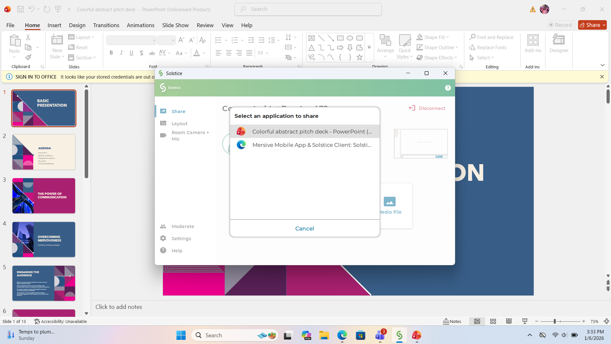
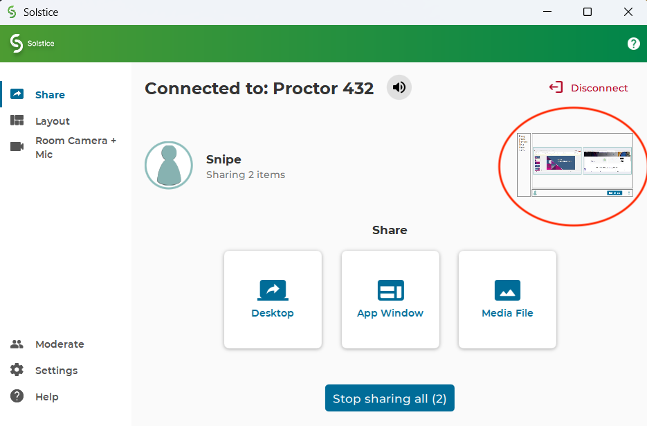
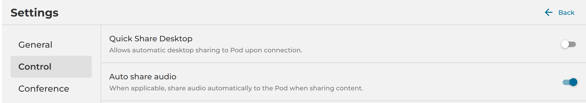
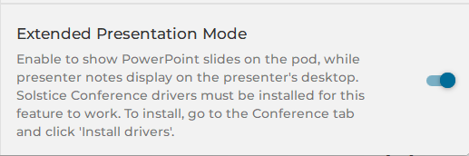

Fastest way to get on the screen (Windows)
1) Open the Mersive app
2) Enter Room IP + 4-digit key
3) Click Start sharing by selecting Desktop/App Window
If something doesn’t show up, ensure you open the app that you've planned to share (don’t minimize it).
3
How to share (most common)
▼
After you enter the Room IP + 4-digit key, choose one option below:
🪟 App Window (share one app)
- Open the app you planned to share in class (PowerPoint/Browser/PDF)
- Keep it visible (not minimized)
- In the Mersive app, click App Window → select your app
If your app is minimized, it will NOT appear in the list. Open it and keep it visible, then try again.

Quick win: Open the apps you plan to show before connecting. Then App Window shows them immediately.
🔄 Switching between multiple apps (App Window)
App Window does NOT switch automatically when you change apps on your laptop.
You must add each application to the Mersive app and then switch using the preview inside the Mersive app.
Very important: All applications you want to share must be OPEN and NOT minimized.
Minimized apps may not appear in the App Window list.
- Open all apps you plan to show (slides, browser, documents, videos, etc.)
- In the Mersive app, click App Window → select the first app
✅ That app starts sharing on the classroom screen - When you want to show something else:
go back to the Mersive → click App Window again → select another app - Each app you select is added to the Mersive (you do NOT lose the previous one)
- Inside the Mersive app, you’ll see small preview tiles for all selected apps
- Click any preview tile to switch instantly between apps on the classroom screen 
Good to know: You can add multiple apps first, then switch between them anytime
without reconnecting or re-entering the room code.
If something doesn’t appear on the current running apps list: Make sure the app is open, visible,
and not minimized — then click App Window again.
If students can see the correct app on the screen, you’re doing it right — no extra steps needed.
2
Important step
▼
Enable Auto Share Audio Required for sound
- Click Settings ⚙️ (bottom-left)
- Go to Control
- Turn AUTO SHARE AUDIO ON ✅
If there’s no sound in class, this is the first thing to check.

Install Room Camera + Mic Drivers (one time)
- Go to Room Camera + Mic
- Click Install Drivers
- Accept terms → click Next
- When Windows asks for permission, CLICK YES

Enable Extended Presentation Mode For PPT notes
- This option will be visible only after you install room+camera drivers
- Settings → Control
- Turn Extended Presentation Mode ON ✅
Slides go to the room screen; your notes stay on your laptop.

From now on: Open the Mersive → IP → 4-digit key → share 🎉
1
First-time install (only once)
▼
Download the Mersive Solstice App
- Open Chrome/Edge
- Search Mersive Solstice and open the official website
- Click Download Now
- Select Windows (.msi)
Install the App Don’t skip
- Open the downloaded file
- Click Next → Accept Terms
- When Windows asks for permission, click YES
Permission prompt must be approved or the app won’t install correctly.
First time opening
- Open the Mersive
- Name: enter your first name
- Skip calendars if prompted
- Enter Room IP + 4-digit key (shown on the display)